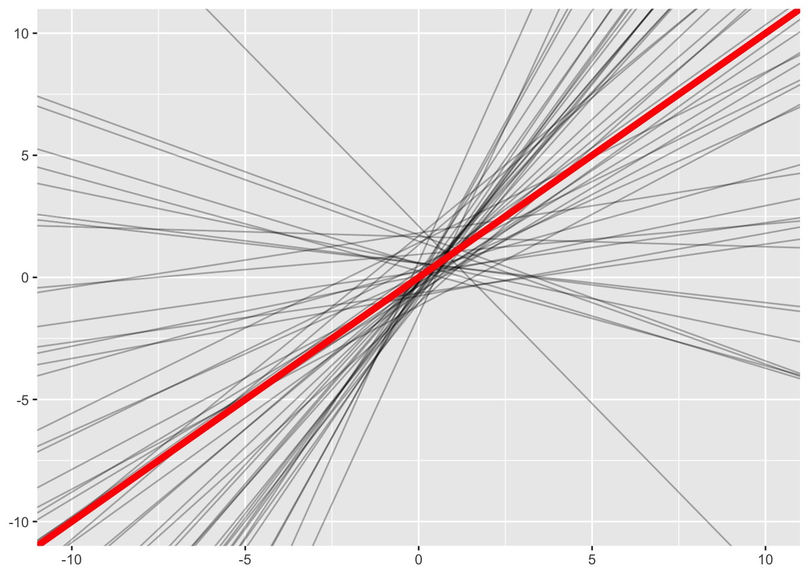
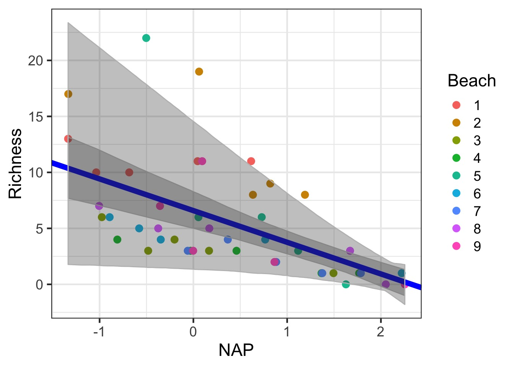

Mixed Models

Today
- Moving to Mixed Models
- Fitting and Evaluating models
- Visualizing different types of mixed models
- Uncertainty
Random Effects Model
\[Y_{ij} = \alpha_{j} + \epsilon_i\]
\[\alpha_{j} \sim \mathcal{N}(\mu_{\alpha}, \sigma^2_{\alpha})\]
\[\epsilon \sim \mathcal{N}(0, \sigma^2)\]
Now add predictors: Mixed Models with Variable Intercepts
\[Y_{ij} = \alpha_{j} + \beta X_i + \epsilon_i\]
\[\alpha_{j} \sim \mathcal{N}(\mu_{\alpha}, \sigma^2_{\alpha})\]
\[\epsilon \sim \mathcal{N}(0, \sigma^2)\]
Now add predictors: Mixed Models with Variable Slopes
\[Y_{ij} = \alpha + \beta_j X_{ij} + \epsilon_i\]
\[\beta_{j} \sim \mathcal{N}(\mu_{\beta}, \sigma^2_{\beta})\]
\[\epsilon \sim \mathcal{N}(0, \sigma^2)\]
Now add predictors: Mixed Models with Variable Slopes and Intercepts
\[Y_{ij} = \alpha_{ij} + \beta_{j}X_{ij} + \epsilon_{ij}\]
\[\begin{pmatrix}
\alpha_{ij} \\ \beta_{ij} \end{pmatrix} \sim \mathcal{MVN}\left ( \begin{pmatrix} \mu_{\alpha} \\ \mu_{\beta} \end{pmatrix} , \begin{pmatrix} \sigma_{\alpha}^{2}& \rho\sigma_{\alpha}\sigma_{\beta}\\ \rho\sigma_{\alpha}\sigma_{\beta} & \sigma_{\beta}^{2} \end{pmatrix} \right )\]
\[\epsilon \sim \mathcal{N}(0, \sigma^2)\]
Why MVN?

Today
- Moving to Mixedl Models
- Fitting and Evaluating models
- Visualizing different types of mixed models
- Uncertainty
A Greenhouse Experiment testing C:N Ratios
Sam was testing how changing the C:N Ratio of soil affected plant leaf growth. Sam had 3 treatments. A control, a C addition, and a N addition. To ensure that any one measurement of one leaf wasn’t a fluke, Sam measured 3 leaves per plant. Sam also put these plants in multiple growth chambers, such that there was one of each treatment per growth chamber.
The design is as follows:
3 Treatments (Control, C, N)
4 Pots of Plants per Treatment
4 Growth Chambers with n=1
3 Leaves Measured Per Pot
Nesting and Hierarchies
Here we have two levels of nesting:
1. Leaves in a pot
2. Pot in a chamber
Now add predictors: Mixed Models with Variable Intercepts
\[Y_{ijk} = \alpha_{jk} + \beta X_i + \epsilon_i\]
\[\alpha_{jk} \sim \mathcal{N}(\mu_{\alpha_k}, \sigma^2_{\alpha_j})\]
\[\alpha_{k} \sim \mathcal{N}(\mu_{\alpha}, \sigma^2_{\alpha_k})\]
\[\epsilon \sim \mathcal{N}(0, \sigma^2)\]
Visualizing Our Plant Experiment

But how variable are things between growth chambers?

Questions
- Does treatment matter?
- Do we need to account for growth chamber?
- Note, we at least need to account for non-independence of pot
What random effects do I need to use?
- Is there a clear and obvious source of non-independence due to a group?
- Yes, include it!
- Yes, include it!
- Is there a possible, but, eh, possibly non-problematic source of non-independence?
- Put it to the test!
- Put it to the test!
Evaluating Random Effects
- Do this first, as random effect structure alters fixed effects outcomes
- Use \(\chi^2\) tests for random effects - for a REML fit without any random effects, use gls OR
- If variance components small, need simulation approaches - see RLRsim
Our Model
A Quick Note in Nesting Code
- We did not specify nesting
lme4automagically notes nested structure, calculates random effects appropriately
- This is not so for
nlme- special syntax -1 | Toplevel / Lowerlevel
- or1 | Lowerlevel %in% Toplevel
- Will work in
lme4, but why?
Nesting: These produce equvalent results to plants_mer
`
A Test of Random Effects with RLRT
plants_mer_nochamber <- update(plants_mer, . ~ . - (1|Chamber))
anova(plants_mer, plants_mer_nochamber)Data: plants
Models:
plants_mer_nochamber: Growth ~ Treatment + (1 | Pot)
plants_mer: Growth ~ Treatment + (1 | Pot) + (1 | Chamber)
Df AIC BIC logLik deviance Chisq Chi Df
plants_mer_nochamber 5 185.61 193.53 -87.805 175.61
plants_mer 6 187.44 196.94 -87.719 175.44 0.1711 1
Pr(>Chisq)
plants_mer_nochamber
plants_mer 0.6791A Test of Random Effects via Simulation
Need to include a model with ONLY the random effect being tested
A Test of Random Effects via Simulation
Need to include a model with ONLY the random effect being tested
simulated finite sample distribution of RLRT.
(p-value based on 10000 simulated values)
data:
RLRT = 0.12832, p-value = 0.2765Evaluating Random Effects: Final Thoughts
- If your random effect is by design, include it!
- If you suspect random effects, nature is variable, include them!
- Carefully consider your RE a priori!
- Worst case, your design is not sufficient
- In which case, you drop some you cannot estimate
- And/or try alternate fitting methods
- Worst case, your design is not sufficient
Testing fixed effects
- RLRT tests for fixed effects are conservative
- Provide more weight of Deviance to Random Effects
- Need to refit models using ML
- setREML=FALSE
DF for Fixed Effect Testing
- Satterthwaite approximation - Based on sample sizes and variances within groups
-lmerTest(which is kinda broken at the moment)
- Kenward-Roger’s approximation
- Based on estimate of variance-covariance matrix of fixed effects and a scaling factor
- More conservative - incar::Anovaandpbkrtest
With no Correction
plants_mer_ml <- lmer(Growth ~ Treatment +
(1|Pot) + (1|Chamber),
data= plants, REML=FALSE)
anova(plants_mer_ml, type = 2)Analysis of Variance Table
Df Sum Sq Mean Sq F value
Treatment 2 110.38 55.189 13.559Note the F test - Chi Sq tests can be biased.
Kenward-Roger Approximation with car::Anova
Analysis of Deviance Table (Type II Wald F tests with Kenward-Roger df)
Response: Growth
F Df Df.res Pr(>F)
Treatment 10.172 2 6 0.01181 *
---
Signif. codes: 0 '***' 0.001 '**' 0.01 '*' 0.05 '.' 0.1 ' ' 1Note that DenDF are 6. Other methods (Satterweith) say 8, lm would have been 33! But only without pot and chamber
Can get Coefficient tests, but…
Estimate Std. Error t value
(Intercept) 9.102532 1.746777 5.211045
TreatmentAdd N 10.432122 2.312960 4.510291
TreatmentControl 5.301297 2.312960 2.291997But…Confidence intervals
2.5 % 97.5 %
.sig01 1.3978164 4.598781
.sig02 0.0000000 4.501796
.sigma 1.5578715 2.757033
(Intercept) 5.8670276 12.338023
TreatmentAdd N 5.9984799 14.865782
TreatmentControl 0.8676554 9.734958 2.5 % 97.5 %
.sig01 NA NA
.sig02 NA NA
.sigma NA NA
(Intercept) 5.6789128 12.526152
TreatmentAdd N 5.8988038 14.965440
TreatmentControl 0.7679793 9.834616AIC
Yes, you can use AIC…carefully
- Comparison of models with varying fixed effects (marginal AIC) is fine
- Varying random effects structure…not as much
- Conditional AIC (cAIC) sensu Vaida and Blanchard 2005 - Uses conditional likelihood and effective DF
- Based on fit v. observed responses
- This is an evolving area of research
Still gotta do a lot by hand (e.g. cAICc)
cAIC
[1] 179.072[1] 166.6205[1] 163.6619cAIC in Action
[1] 166.6205[1] 12.44629[1] 166.2259[1] 12.26366[1] -0.394544R2
- What does R2 mean in the context of mixed models?
- We are often interested in the explanatory power of fixed effects
- But random components explain variability in the data
- We need to decompose these into marginal and conditional R2 values - e.g., from fixed and random sources
- See Schielzeth and Nakagawa 2013 MEE and
piecewiseSEM’s implementation
Getting Fit: Marginal v. Conditional R^2
Response family link method Marginal Conditional
1 Growth gaussian identity none 0.5556837 0.8787641 Response family link method Marginal Conditional
1 Growth gaussian identity none 0.5556466 0.8787815Get Treatment Estimates from emmeans
Treatment emmean SE df lower.CL upper.CL
Add C 9.1 1.75 8.73 5.13 13.1
Add N 19.5 1.75 8.73 15.56 23.5
Control 14.4 1.75 8.73 10.43 18.4
Degrees-of-freedom method: kenward-roger
Confidence level used: 0.95 Posthocs from emmeans
contrast estimate SE df t.ratio p.value
Add C - Add N -10.43 2.31 6 -4.510 0.0097
Add C - Control -5.30 2.31 6 -2.292 0.1331
Add N - Control 5.13 2.31 6 2.218 0.1462
P value adjustment: tukey method for comparing a family of 3 estimates So, what was different?
- Maybe you want to look at random effects structure?
- Diagnostics are still key!
- You can be fiddly with tests, or…
- You can evaluate model implications with posthoc simulations of predictions!!
Today
- Brief review
- Evaluating models
- Visualizing different types of mixed models
- Uncertainty
Types of Mixed Models

Let’s take this to the beach with Tide Height

We’ve seen a Variable Intercept Model Already
How to Plot?

Adding Variable Intercepts
Adding Variable Intercepts

Adding the fixed effect
Adding the fixed effect

Variable Slope Model
\[Y_{ij} = \alpha + \beta_j X_{ij} + \epsilon_i\]
\[\beta_{j} \sim \mathcal{N}(\mu_{\beta}, \sigma^2_{\beta})\]
\[\epsilon \sim \mathcal{N}(0, \sigma^2)\]
Variable Slope Model
Note the - 1 to denote only the slope is varying
Variable Slope-Intercept Model
\[Y_{ij} = \alpha_{ij} + \beta_{j}X_{ij} + \epsilon_{ij}\]
\[\begin{pmatrix}
\alpha_{ij} \\ \beta_{ij} \end{pmatrix} \sim \mathcal{MVN}\left ( \begin{pmatrix} \mu_{\alpha} \\ \mu_{\beta} \end{pmatrix} , \begin{pmatrix} \sigma_{\alpha}^{2}& \rho\sigma_{\alpha}\sigma_{\beta}\\ \rho\sigma_{\alpha}\sigma_{\beta} & \sigma_{\beta}^{2} \end{pmatrix} \right )\]
\[\epsilon \sim \mathcal{N}(0, \sigma^2)\]
Variable Slope-Intercept Model
Variable Slope Intercept Model

Which Random Effects do I need - Look at al of those variances!
| term | estimate | std.error | statistic | group |
|---|---|---|---|---|
| (Intercept) | 6.5887028 | 1.2647632 | 5.209436 | fixed |
| NAP | -2.8300264 | 0.7229382 | -3.914617 | fixed |
| sd_(Intercept).Beach | 3.5490711 | NA | NA | Beach |
| sd_NAP.Beach | 1.7149557 | NA | NA | Beach |
| cor_(Intercept).NAP.Beach | -0.9901979 | NA | NA | Beach |
| sd_Observation.Residual | 2.7028237 | NA | NA | Residual |
Testing Variable Intercept structure
#refit = FALSE as anova defaults to refitting models with REML=FALSE
anova(rikz_varslopeint, rikz_varslope, refit=FALSE)Data: rikz
Models:
rikz_varslope: Richness ~ NAP + (NAP - 1 | Beach)
rikz_varslopeint: Richness ~ NAP + (NAP + 1 | Beach)
Df AIC BIC logLik deviance Chisq Chi Df
rikz_varslope 4 260.20 267.43 -126.10 252.20
rikz_varslopeint 6 244.38 255.22 -116.19 232.38 19.817 2
Pr(>Chisq)
rikz_varslope
rikz_varslopeint 4.975e-05 ***
---
Signif. codes: 0 '***' 0.001 '**' 0.01 '*' 0.05 '.' 0.1 ' ' 1Testing Variable Slope structure
Data: rikz
Models:
rikz_varint: Richness ~ NAP + (1 | Beach)
rikz_varslopeint: Richness ~ NAP + (NAP + 1 | Beach)
Df AIC BIC logLik deviance Chisq Chi Df
rikz_varint 4 247.48 254.71 -119.74 239.48
rikz_varslopeint 6 244.38 255.22 -116.19 232.38 7.0964 2
Pr(>Chisq)
rikz_varint
rikz_varslopeint 0.02878 *
---
Signif. codes: 0 '***' 0.001 '**' 0.01 '*' 0.05 '.' 0.1 ' ' 1Today
- Brief review
- Evaluating models
- Visualizing different types of mixed models
- Uncertainty
Plotting Uncertainty in Fixed Effects via Simulation
Plotting Uncertainty via Simulation
Plotting Uncertainty via Simulation

Showing Fixed Prediction Uncertainty: include.resid.var=TRUE

Getting the Uncertainty due to Random Effects: Generalization
#new data for all beaches
uncDF <- data.frame(expand.grid(Beach = levels(rikz$Beach),
NAP = seq(min(rikz$NAP), max(rikz$NAP),
length.out=200)))
#fit values
pred_re_df <- predictInterval(rikz_varslopeint,
newdata=uncDF,
which="full",
include.resid.var = FALSE)
#get the wide range
fit_re_df <- cbind(uncDF, pred_re_df) %>%
group_by(NAP) %>%
summarize(fit=mean(fit), lwr = min(lwr), upr = max(upr)) %>%
ungroup()Fit and Random Error

Getting the Full Range of Uncertainty
Getting the Full Range of Uncertainty

Need all three for extrapolation
Example
- Load up the RIKZ data
- Look at both exposure and NAP
- Test fixed and random effects
- Visualize results
General Protocol for Model Fitting
- Start with model with all fixed and random effects that may be important. Evaluate with diagnostics.
- Evaluate random effects with full model of all fixed effects using REML(\(\chi^2\), RLRT, cAIC, etc.)
- Evaluate fixed effects with reduced random effects (F Tests using ML fit)
- Model diagnostics again…
- Draw inference from model using Wald tests, lsmeans, visualization, etc.